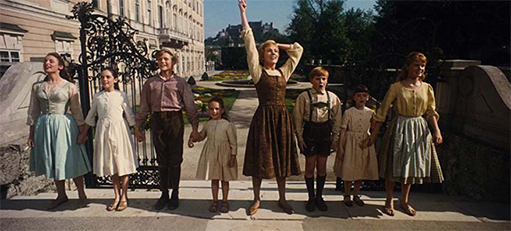
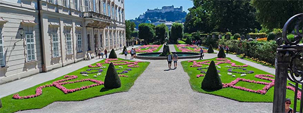
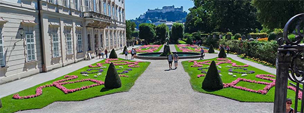

미라벨정원 Mirabell garten
주소: Mirabellplatz 3, 5020 Salzburg, Austria.
입장료: 무료
유명한 ‘도레미 송’의 촬영지
오스트리아 잘츠부르크의 정원
미라벨궁 정면에 있는 푸르른 정원으로 우아한 경치, 오솔길, 꽃 풍경을 즐길 수 있습니다.
https://www.stadt-salzburg.at/mirabellgarten/